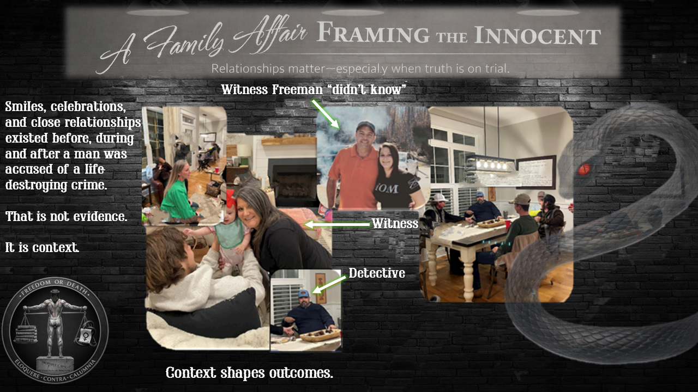
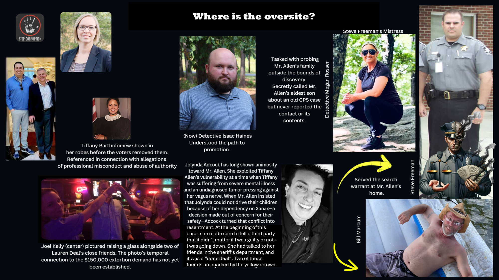

An Edifice of Lies
“A good prosecutor can make an innocent man look guilty. A great prosecutor never has to.”

Key Players & Roles
Benjamin Allen
Defendant
Military veteran and father accused of sexual assault. Lost employment and stability during drawn out 6+ year prosecution. Subject of law enforcement and prosecutorial misconduct due to a family connection that the accuser has with law enforcement.
Lauren Deal
Accuser
Primary witness whose testimony evolved significantly from initial police interviews to trial. Multiple contradictions were documented between statements and many of the claims she made were outrageously impossible by any standard. Claimed prior familiarity with Allen through his ex-wife. Later, she changed her story to support ADA's vindictiveness against Allen for exercising his constitutional rights.
Detective Steve Freeman
Lead Investigator
Accused of perjury, fabricating probable cause, suppressing exculpatory evidence, and undisclosed conflicts of interest due to familial ties with witness Carmen Love. Freeman brazenly altered witness statements in official documents, even though the statements were recorded conversations accessible to the defense.
ADA Tiffany Bartholomew
Lead Prosecutor
Assistant District Attorney accused of witness coaching, evidence misrepresentation, fabricating aggravating factors, and deliberately violating judicial instructions on evidence admission.
Carmen Love
Key Witness / Freeman's Relative
Witness and cousin of Deal, who accompanied Lauren Deal to the bar. Her statements to Freeman (her relative) contradicted Deal's crafted narrative to law enforcement. Even though her statements were exculpatory, Freeman claimed to have used them for probable cause. Later testimony shifted to align with the prosecution's narrative.
Officer Isaac Haines
Initial Responding Officer
Conducted first interview with Lauren Deal. Testified his role was fact-finding to determine if the case warranted a detective assignment, creating a timeline contradiction since Freeman testified he had already been notified about a sexual assault allegation before the interview with Deal had even begun. Stated the role of himself and Freeman as: "to prove that he (Allen) is guilty". Got promoted to Detective after this case.
Joseph DeMarco
Eyewitness
Present at Schooly's bar and at Allen's residence. Picked up Deal after the alleged incident. Fear and intimidation initially led him to lie about events, such as picking Deal up on the road. They both had different stories about that event. His later (missing statement) contradicts Deal's trial narrative on multiple points.
Steven Happel
Eyewitness
Present at the bar and residence. Testimony provides an alternative timeline and contradicts Deal's claims about physical contact and behavior. His testimony matches what is on video , unlike Deal's.
Joel Kelly
Third Party with Financial Motive
Connected to $150,000 extortion demand. Daughter is best friends with accuser. Accuser's other best friend worked for him. Part of the same social circle as the accuser.
James Morrison & Peter West
Missing Witnesses
Present at the bar with Carmen Love. Never interviewed by investigators despite being identified as material witnesses to the timeline and Lauren's behavior before departure. Morrison was dating Love while Peter West's father worked at the sheriff’s office. West's father signed Allen’s release from jail.
Jolynda Adcock
Personal Antagonist
Shown long-standing animosity toward Allen. Exploited Allen's ex-wife's mental illness. Stated "it didn't matter whether Mr. Allen was innocent" due to Sheriff's Department connections.

Key Relationships & Hidden Connections
- • Detective Freeman ↔ Carmen Love (Family)
- • Detective Freeman ↔ James Morrison (Love's boyfriend)
- • Detective Freeman ↔ Peter West III (Colleague's son)
- • These relationships were hidden from court
- • James Morrison (Love's boyfriend)
- • Peter West III - Father works in the Sheriff's Office
- • Neutral bartenders
- Their evidence would correspond to the video which is the opposite of the official narrative.

Select image to view full resolution

Select image to view full resolution